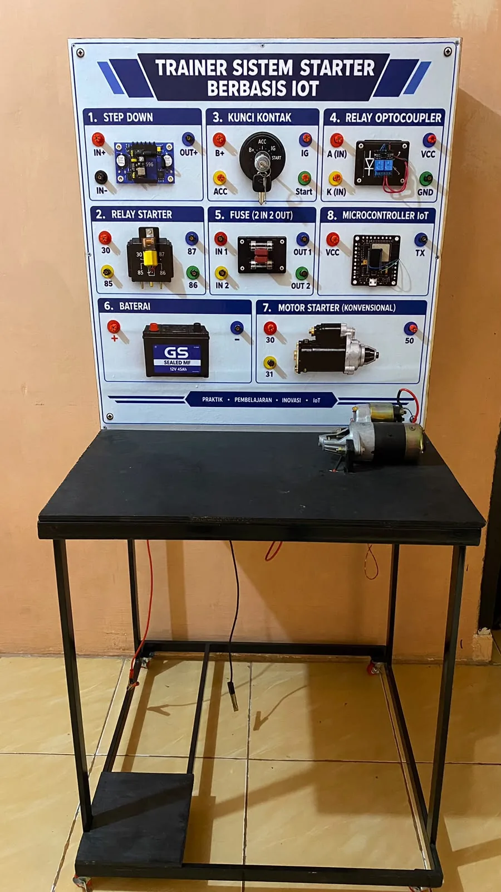
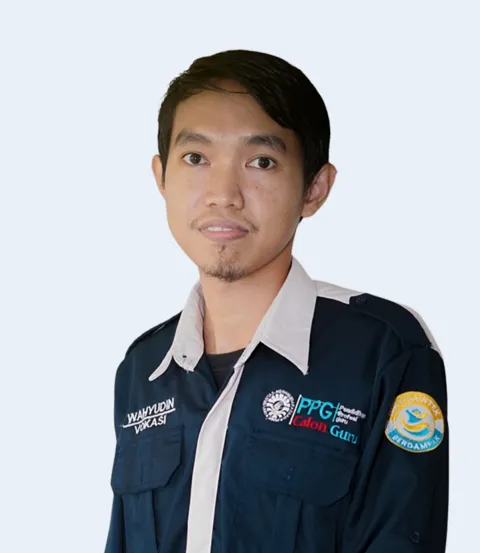
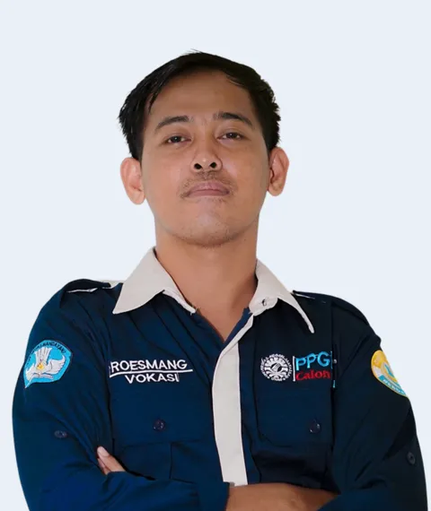
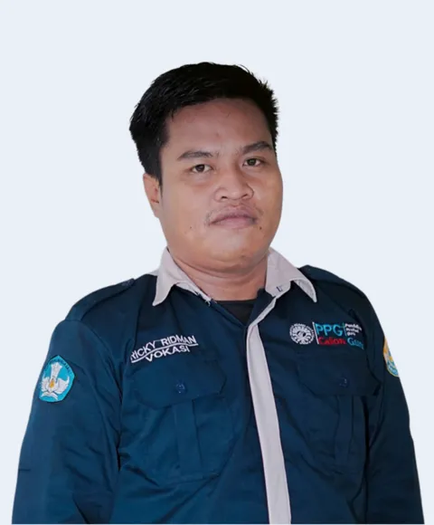
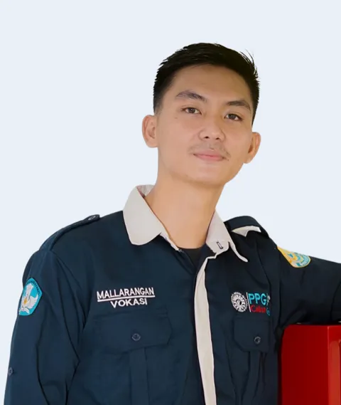
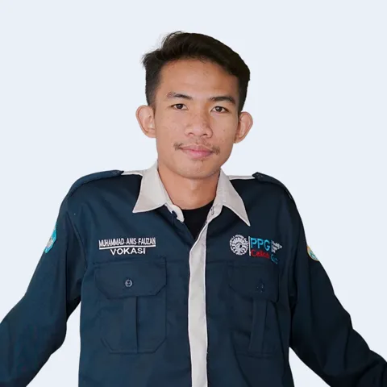

Visual dan konkret
Siswa dapat mengamati komponen serta susunan sistem starter melalui media trainer.
Kerabat Teknik adalah bisnis yang bergerak di bidang penjualan dan pengembangan trainer pembelajaran otomotif. Kami menghadirkan media praktik berbasis IoT yang membantu sekolah, guru, dan lembaga pendidikan menghubungkan teori dengan pengalaman nyata.
Kunci OFF. Belum ada arus yang mengalir.

Salah satu produk unggulan Kerabat Teknik adalah trainer fisik sistem starter. Dilengkapi baterai, kabel, modul mikrokontroler, dan aplikasi yang digunakan lewat tablet (tablet tidak termasuk dalam paket), media praktik ini membantu guru dan siswa mengenali komponen, memahami hubungan rangkaian, serta mempelajari proses kerja sistem starter kendaraan secara lebih konkret.
Ringkasan komponen dan kelengkapan yang membantu Anda menyusun kebutuhan pengadaan.
| Jenis | Trainer fisik berupa panel kelistrikan sistem starter untuk praktik langsung |
|---|---|
| Termasuk dalam paket | Trainer beserta baterai dan kabel, modul mikrokontroler, aplikasi, dan modul digital pendamping (bonus). Tablet tidak termasuk. |
| Komponen pada panel | Delapan blok bernomor: step down, relay starter, kunci kontak, relay optocoupler, fuse (2 in 2 out), baterai 12V 45Ah, motor starter konvensional, dan mikrokontroler IoT (sesuai foto produk) |
| Rangka | Panel terpasang pada meja rangka besi hitam beroda (sesuai foto produk) |
| Kontrol & aplikasi | Modul mikrokontroler berbasis IoT dengan aplikasi yang digunakan lewat tablet (tablet tidak termasuk) |
| Media pendamping | Simulator 3D sistem starter yang terbuka untuk dicoba lewat browser, dan modul digital sebagai bonus pembeli |
| Konteks pembelajaran | Pengenalan komponen, rangkaian kelistrikan, dan prinsip kerja sistem starter (TKR/TBSM) |
| Harga | Rp 5.000.000 per unit (ongkos kirim dan rincian lain dalam penawaran) |
Kerabat Teknik berfokus pada kebutuhan pembelajaran vokasi: media yang relevan, mudah dipahami, dan mendukung kegiatan praktik.
Siswa dapat mengamati komponen serta susunan sistem starter melalui media trainer.
Guru dapat menggunakan trainer sebagai alat bantu untuk menjelaskan prinsip kerja dan rangkaian sistem starter.
Panel berbasis IoT, simulator 3D, dan modul digital melengkapi pengalaman belajar di dalam maupun di luar kelas praktik.
Saksikan video pengenalan dan demonstrasi untuk melihat gambaran penggunaan media pembelajaran sistem starter.

Putar video untuk melihat penjelasan dan demonstrasi. Jika pemutar tidak tersedia pada jaringan Anda, video juga dapat dibuka langsung melalui YouTube.
Trainer fisik tetap menjadi produk utama. Simulator 3D dapat dicoba siapa saja, dan modul digital menjadi bonus pada setiap pembelian.
Jelajahi komponen dan alur kerja sistem starter secara visual melalui simulator yang dapat diakses lewat browser. Dapat dicoba gratis oleh siapa saja.
Buka Simulator Starter ↗ (membuka tab baru)Materi pendamping untuk membantu guru dan siswa memahami komponen, rangkaian, serta prinsip kerja sistem starter.
Tanyakan Modul ↗ (membuka tab baru)Empat langkah dari pertanyaan pertama sampai trainer dipakai di kelas.
Harga: Rp 5.000.000 per unit. Tablet tidak termasuk dalam paket. Ongkos kirim dan rincian lain dikonfirmasi dalam penawaran. Simulator 3D dapat dicoba gratis oleh siapa saja.
Jawaban singkat untuk hal-hal yang biasanya ditanyakan sekolah dan lembaga pelatihan sebelum memesan.
Harga jual Rp 5.000.000 per unit. Ongkos kirim dan rincian lain dikonfirmasi dalam penawaran sesuai jumlah unit dan kebutuhan Anda.
Trainer fisik sistem starter lengkap dengan baterai dan kabel, modul mikrokontroler dan aplikasi, serta modul digital pendamping sebagai bonus. Tablet tidak termasuk dalam paket.
Tidak. Aplikasi digunakan lewat tablet yang disediakan sendiri oleh pembeli.
Ada empat langkah: konsultasi lewat WhatsApp atau form penawaran, kami kirim penawaran, trainer dikirim ke alamat Anda beserta akses bonus digital, lalu panduan penggunaan agar guru siap mengajar.
Trainer dikembangkan untuk kebutuhan belajar TKR/TBSM di SMK, dan dapat dipakai oleh guru, instruktur, bengkel pendidikan, serta lembaga pelatihan otomotif.
Simulator 3D dapat dibuka siapa saja lewat browser melalui tombol Buka Simulator Starter. Akses modul digital dikirim bersama trainer.
Bisa. Simulator 3D terbuka untuk umum, dan Anda juga dapat mencoba skema interaktif di beranda serta menonton video demo. Hubungi kami lewat WhatsApp jika ingin berdiskusi.
Silakan sampaikan kebutuhan sekolah atau lembaga Anda lewat WhatsApp. Tim kami akan mendiskusikannya bersama Anda.
Kerabat Teknik berfokus pada penyediaan dan pengembangan media praktik otomotif. Trainer Sistem Starter adalah salah satu produk yang saat ini kami tampilkan. Untuk kebutuhan trainer pada sistem otomotif lainnya, silakan konsultasikan kepada tim kami.
Trainer fisik untuk membantu pembelajaran komponen, rangkaian kelistrikan, dan prinsip kerja sistem starter kendaraan.
Lihat detail produk ↗Punya kebutuhan media praktik untuk materi atau sistem otomotif lain? Sampaikan kebutuhan sekolah atau lembaga Anda kepada tim kami untuk didiskusikan.
Konsultasikan kebutuhan ↗ (membuka tab baru)Untuk produk Trainer Sistem Starter, tersedia simulator 3D yang dapat dicoba secara terbuka serta modul digital sebagai pendamping kegiatan belajar.
Lihat pendamping belajar ↗Kerabat Teknik merupakan usaha yang bergerak di bidang penjualan dan pengembangan trainer pembelajaran otomotif. Kami hadir untuk mendukung proses belajar yang lebih aplikatif melalui media praktik yang membantu menjembatani teori dan kondisi nyata di bidang otomotif.
Bisnis ini dijalankan bersama oleh lima orang dengan bidang tanggung jawab yang saling mendukung. Kami membuka komunikasi dengan sekolah, guru, instruktur, bengkel pendidikan, dan lembaga pelatihan yang membutuhkan media pembelajaran otomotif.
Kerabat Teknik dikelola oleh lima orang dengan tanggung jawab yang saling melengkapi—mulai dari operasional, pengembangan produk, hubungan pelanggan, pemasaran, hingga komunikasi bisnis.

Manajemen & Operasional · Mengkoordinasikan arah bisnis, operasional, dan pengelolaan keuangan.

Pengembangan Produk · Mengembangkan prototipe trainer, simulator, dan materi pendamping.

Riset Pasar & Layanan Pelanggan · Menggali kebutuhan pengguna dan mengelola komunikasi pelanggan.

Pemasaran & Media Sosial · Menyusun strategi promosi dan mengelola konten digital.

Komunikasi & Materi Penjualan · Menyiapkan presentasi produk, materi promosi, dan informasi penjualan.
Konsultasikan kebutuhan media praktik otomotif untuk sekolah, bengkel pendidikan, atau lembaga pelatihan. Tim Kerabat Teknik siap membantu memberikan informasi produk dan penawaran.